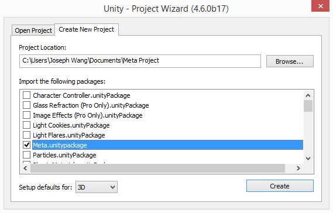
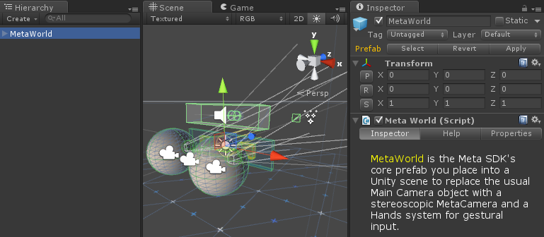
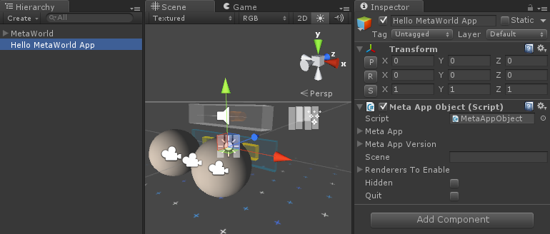
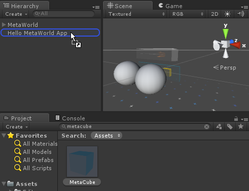
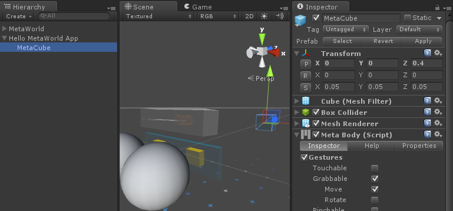
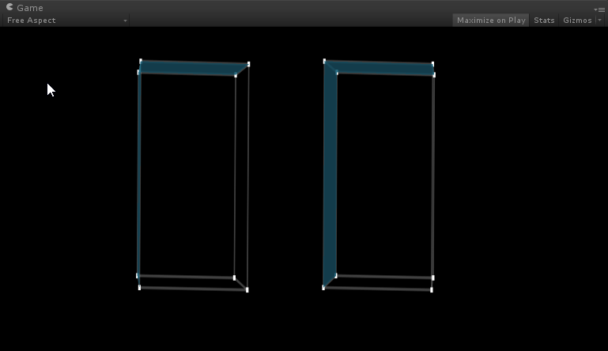

Hello MetaWorld
Your first App using MetaWorld and MetaAppObject
Overview
This guide will show you how to create your first Meta application: a cube that you can view through the glasses.
By the end of this guide, you will be able to:
- Know how to import the Meta project
- Create a Unity scene
- Add the
MetaWorld prefab
- Use an App object to manage your App
- Add a
MetaCube primitive
- Run a Meta App from within the Unity Editor
Requirements
This tutorial also assumes that you have already completed the following:
Steps
Setting up
- Plug in and set up your Meta glasses
- Run Unity
Creating a new Meta project
- Create a new Unity project and import the Meta package
- If you don't see the Project Wizard, select Menu Bar > File > New Project
- Check the box that says
@ref MetaDotunitypackage

Meta.unitypackage in the Project Wizard
- Alternativly, you can add it to a pre-existing project by: Assets> Import Assets> Meta
- Create a new scene named 'Hello MetaWorld'
- Menu Bar > File > New Scene
- Save the new scene as 'Hello MetaWorld'
Adding MetaWorld to the scene
- Delete 'Main Camera' from the scene
- Select 'Main Camera' in the Hierarchy window
- Right click > Delete
- Click and drag the
MetaWorld prefab from the Project View to the Hierarchy window at position (0, 0, 0)
- Project View > Assets > Meta > MetaCore > Prefabs > MetaWorld
- Modify the values in the Inspector window so that the position is (0, 0, 0)

MetaWorld in your scene
Adding an app object with the MetaAppObject script
- Create an empty GameObject at position (0, 0, 0)
- GameObject > Create Empty
- Modify the values in the Inspector window so that the position is (0, 0, 0)
- Rename the empty GameObject to 'Hello MetaWorld App'
- Select the empty GameObject in the Hierarchy window
- Left-click the empty GameObject again in the Hierarchy window to get an editable text field
- Type in 'Hello MetaWorld App'
- Add the
MetaAppObject script to your 'Hello MetaWorld App' GameObject
- Select the 'Hello MetaWorld App' GameObject in the Hierarchy window
- Click Add Component at the bottom of the Inspector window
- Type in 'MetaAppObject' and click on the search result to add it

Hello MetaWorldApp in your scene
Adding a MetaCube primitive prefab
- Click and drag the
MetaCube prefab from the Project View to your 'Hello MetaWorld App' GameObject in the Hierarchy window at position (0, 0, 0.4)
- Search for
MetaCube in the search box at the top-right of the Project View OR navigate to Assets > Meta > MetaSpace > Resources > _Prefabs > MetaPrimitives > MetaCube
- Click and drag the
MetaCube prefab from the Project View to your 'Hello MetaWorld App' GameObject in the Hierarchy window
- Modify the values in the Inspector window so that the position is (0, 0, 0.4)

Dragging the MetaCube primitive prefab

MetaCube in your scene
- Check that the "Maximize on Play" button is selected in the Game View and that your Unity Editor window is maximized
- Save the scene
- Put on your Meta glasses
- Click the Play button to run the scene
- Turn your head to look for the cube (or push F4 to recentre the Game View)
- If you are not seeing 2 side-by-side images on your computer monitor, press F2 to switch to side-by-side 3D mode
- If you are not seeing a 3D image through the glasses, press the 3D toggle button on the bottom left of your Meta 1 Control Box
- If you are seeing a very small image through the glasses, press F3 to switch to a rectified view
- Grab the cube and move it around with your hand!
- Lift up your open hand in front of the glasses to the position that you see the cube
- Grab the cube by closing your hand
- Move your closed hand in varying directions to move the cube

MetaCube in the Game View
Toggle the live camera display
- Press F8 to toggle a live RGB camera feed of the physical world that appears behind your augmented content.
- For a full list of keyboard shortcuts, refer to the Keyboard Shortcuts page.
Conclusion
Congratulations, you have made your first Meta app with a grabbable MetaCube primitive! Every Meta app that you create will need the 'Main Camera' object to be deleted and the MetaWorld prefab to be inserted in order to work with the Meta glasses. The contents of your app should also be stored within your App GameObject - in this case, 'Hello MetaWorld App'.
For more information about MetaWorld, refer to the MetaWorld Prefab section of the Meta App Programming Guide.
The next tutorial will teach you how to use the MetaBody script to create your own grabbable objects.
Next tutorial: Making a MetaBody

 1.8.8
1.8.8